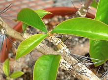
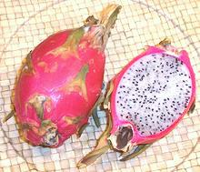
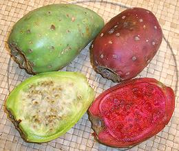
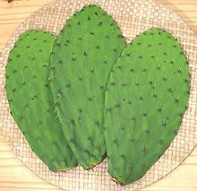
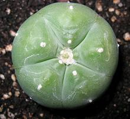

SAFARI
Users
General & History
 The cacti we are familiar with today evolved from a leafy plant, probably very similar to the Pereskia grandifolia in the photo. The Pereskia has already developed tufts of viciously sharp cactus spines all over it's stems, so it's not so long a reach to become a cactus. Just swell the stems, move the chlorophyll back into them and lose the leaves.
Since there are no cacti native to Europe or Africa, they must have first appeared less than 40 million years ago after the continents were well separated.
The first European contact with a cactus was during Columbus' first
voyage, and he took one home as a curiosity, as many others have since.
Prickly pear cactus was taken to Australia in the 19th century to use as
natural fences and to establish a cochineal dye industry, and they have
since become a serious pest there.
Photo by Stan Shebs distributed under license
Creative Commons
Attribution-Share Alike v2.5
Varieties
There are thousands of species of cactus, in fact I must have about 40 of them just here around the house, but this page will consider only those that are used for culinary purposes or otherwise ingested.
Dragon Fruit
 [Red Pitaya, Night blooming Cereus, Than long (Vietnam), Hylocereus undatus]
These cactus are native to Mexico, Central and South America but are now grown commercially throughout Southeast Asia, southern China and northern Australia and Hawaii, but particularly in Vietnam. In Southern California the fruit is most commonly found in Asian markets - and in other parts of the country it is found in expensive gourmet restaurants.
There are other Hylocereus species which produce similar fruit,
particularly H. costaricensis (Costa Rick Pitaya) which is red with
red flesh and H. megalanthus (Yellow Pitaya), a South American
species that produces a yellow fruit with white flesh.
Details and Cooking.
Tunas
 [Prickly Pear fruit, Beles (Ethiopia / Eritrea), Tzabar (Israel), Ficodinnia (Italy), Opuntia ficus-indica]
While there are many species of Opuntia, ficus-indica is by far the most economically important. Because it spread so widely so quickly it's exact point of origin was long uncertain, but recent DNA evidence shows it was domesticated from wild species native to central Mexico. It is known that Opuntia fruit were being eaten in Central America at least 9000 years ago. Today crops are grown throughout their original New World range and in arid regions of North Africa, Ethiopia, Eritrea, Israel and southern Italy.
In the early 20th century this fruit was being imported into the US from Sicily and other Mediterranean countries for consumption by recent Italian and Greek immigrants, but its use faded out in the 1950s. Today it is back, but imported from its land of origin, Mexico, for consumption within our large and growing Mexican immigrant communities.
Aside from eating the fruit, the cactus pads are eaten as Nopales.
The fruits also have antioxidant and other medicinal value and an
extract of the fruit skins has been shown effective in preventing
alcohol hangover. The fruit are also used to make a number of alcoholic
beverages.
Details and Cooking.
Nopales
 [Prickly Pear pads, Opuntia ficus-indica]
Nopales are the cactus pads (technically cladodes) of the same cactus that produces the Tuna fruit. This is an important vegetable in they dryer regions of Mexico and Central America where most vegetables won't grow. The photo specimen in the center was 11 x 5 inches, 3/8 inches thick in the middle and weighed 7-1/8 ounces. Pads that fall from the cactus to the ground will sprout roots wherever they touch the ground and will start a new cactus plant.
In the US Southwest fresh nopales are available in produce markets,
generally in two forms: whole pads (nasty spines and all) and pads prepared
and cut into short strips. In other parts of the country these strips are
available canned, and will work in recipes.
Details and Cooking.
Peyote
 [Mezcal Button, Lophophora williamsii]
Native to southwestern US down to central Mexico, this psychoactive cactus has been used in religious ceremonies by indigenous Americans for over 6000 years, perhaps as much as 20,000. In US Federal law its use in "bonafied religious activity" by native peoples only is protected by law. State jurisdictions may permit religious use by other groups or may not.
Psychological studies have shown long term use of peyote to be far less
damaging than alcohol, in fact it may be beneficial, but such real evidence
has never influenced government officials who build lifelong careers
fighting the never ending "war on drugs".